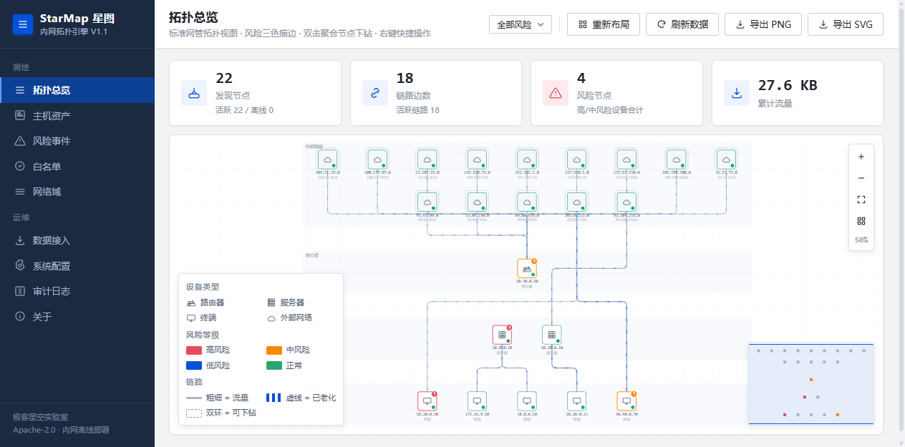
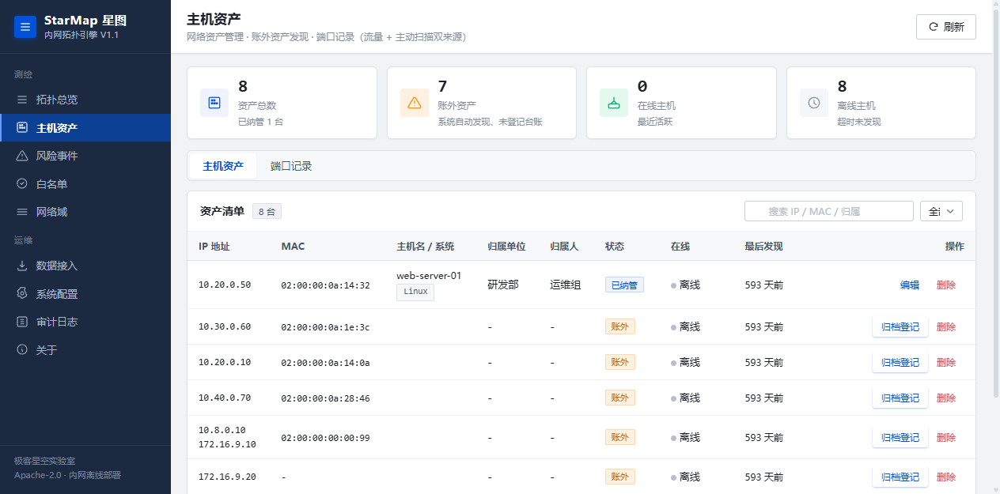

Screenshots
标准网管拓扑 · 原生桌面质感




安全运营的起点是「知道自己有什么」。但内网资产长期处于「看不清」的状态——台账里的不一定在，网络里的不一定在账上。
测试机、旁路设备、离职遗留主机散落在网段里，不在任何台账之上，却可能是攻击者的第一落脚点。看不见，就守不住。
资产登记依赖 Excel 与人工填报，设备更替、IP 变更后底账迅速失真。账实不符是常态，等保审计时只能临时补课。
员工私搭的服务、未登记的开放端口、悄悄接入的旁路，构成安全盲区。传统扫描式测绘有周期、有盲点，难以及时覆盖。
不依赖主动扫描，靠被动流量持续感知。三路数据统一汇入一条流水线，拓扑自动生长，账外设备自然浮现。
PCAP 导入、网卡抓包、远端探针上报，三路流量统一汇入聚合器，自动生长节点与链路——同 MAC 合并、/24 聚合、边老化、NAT 修复。
自动发现的主机登记为「账外资产」，与人工归档的台账对照，账实不符一目了然。未登记主机离线超时自动清理，台账始终保持新鲜。
对可疑行为仅产出特征标签（如「疑似 FRP 隧道特征」），不判定违规、不告警外发、不联动封禁、不解密流量。合规边界清晰，可在授权环境放心部署。
三路数据统一汇入聚合器 → 拓扑引擎 → 检测 → 复核/审计，SQLite 持久化，前端 embed 内嵌，无任何 CDN/外网依赖。
从流量接入到资产归档，一套完整的内网资产测绘闭环。
| 能力 | 说明 | 状态 |
|---|---|---|
| ingest | 三路数据接入：PCAP/PCAPNG 导入 · 网卡实时抓包 · 远端探针上报 | ✅ 可用 |
| topology | 拓扑自动测绘：同 MAC 多 IP 合并 · /24 聚合下钻 · 边老化 · NAT 修复 | ✅ 可用 |
| assets | 主机资产库：账外资产自动登记 · 归档归属信息 · 离线自动清理 | ✅ 可用 |
| ports | 端口记录：流量自动提取 + nmap 主动全端口扫描（双来源） | ✅ 可用 |
| detect | 风险特征打标：frp / clash / reverse_proxy / unknown_egress / multi_net | ✅ 可用 |
| review | 复核闭环：确认 / 误报加白 / 暂缓 · 白名单四维度抑制 · 全量审计 | ✅ 可用 |
| auth | 可选认证：本地账号或 OIDC 单点登录（默认关闭，不做 RBAC） | ✅ 可用 |
# 纯 Go 构建，无需 CGO CGO_ENABLED=0 go build -o starmap ./cmd/starmap ./starmap -config configs/config.yaml # 打开 http://127.0.0.1:8080
# 导入 PCAP，驱动拓扑生长 curl -F "file=@testdata/out/frp_tunnel.pcap" \ http://127.0.0.1:8080/api/ingest/pcap # 测试与验收 go test ./... bash scripts/e2e.sh


三路数据接入、拓扑自动测绘、五类风险打标、复核闭环、审计留痕。
拓扑持久化、并发安全、安全默认配置、UI 重构、标准拓扑图、可选 SSO。
主机资产库（账外资产）、端口记录（流量 + nmap）、探针 TLS 指纹贯通、跨平台主动探测。
服务指纹识别、资产变更比对、探针批次回执、流式 PCAP 解析、更多协议支持。
StarMap 是 Apache-2.0 开源项目。如果你也关心内网资产测绘、账外资产治理，欢迎参与共建——无论是提 Issue、贡献代码，还是给个 Star。
纯 Go + 原生前端，单二进制架构。欢迎贡献检测规则、协议解析、资产指纹能力。
遇到 Bug 或有好想法，欢迎提 Issue。请附上复现步骤与日志，便于快速定位。
在内网部署试用，把发现的问题和场景反馈回来，帮助我们打磨成更实用的资产测绘工具。